Bucket Brigade Devices: MN3007
The Bucket Brigade Device BBD chip was invented by F. Sangster and K. Teer at the Philips Research Labs between 1968-1969. This affordable solid state device provides signal delay and soon found many applications in a wide range of products, especially guitar effects being a midpoint between the bulky old pure analog delay circuits based on magnetic tape and the modern digital systems based in Analog to Digital converters and signal processors.
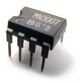
Table of Contents.
1. BBD Functionality.
2. BBD Internal Circuit Topologies.
2.1 Basic Topology.
2.2 Tetrode Isolation Topology.
2.3 Complementary Output Topology.
2.4 Dual Topology.
2.5 Tapped Output Topology.
3. BBD Chips Comparison.
4. Bucket Brigade Device Clock Drivers.
4.1 BBD Clock Limitations.
5. BBD Circuits Architecture.
5.1 Filter Implementation.
6. The MN3007.
6.1 MN3007 VS MN3207.
7. Resources.
7.1 BBDs Datasheets.
1. BBD Functionality.
BBDs are given their name because of the similarity in their functionality to a line of people passing buckets of water to fight a fire. The chip was licensed to Matsushita from mid-70s, Roland/Boss was the first customer and they used it in the Roland JC120 Amplifier, the Chorus CE-1 pedal and later on the Chorus CE-2.
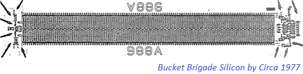
They consist of a series of capacitors sections which carry the analog signal. The charge in each cap stage is passed into the subsequent stage using transistors as switches at a rate determined by an external clock.
In this way, the output delayed signal is discrete in time due to the external clock sampling and analog in amplitude because of the capacitor storage element.
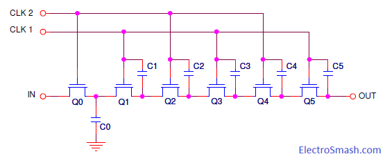
With the high level of CLK2, the input signal is gated through Q0 to the capacitor C0. At the next clock transition, C0 is isolated and the last voltage applied to C0 is held. As CLK2 goes down, CLK1 rises allowing the charge on C0 to be gated to the storage capacitor C1. On the next clock transition, gating transistor Q1 is disabled and Q2 is enabled to allow the charge in C1 to pass the next stage C2. The process is repeated through the circuit until the same voltage appears at the output.
2. BBD Internal Circuit Topologies.
The basic BBD internal schematic is made of a series of typically thousands of capacitors and MOS transistor switches. The design suffered some modifications to enhance its performance:
2.1 The Basic Topology.
The basic model invented by Sangster at Philips in 1968. It was the first attempt to make a practical implementation of an analog delay structure. This initial design had a poor transfer efficiency being limited to few stages and low-frequency applications.
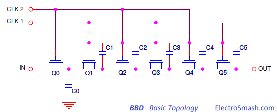
2.2 The Tetrode Isolation Topology.
The first major advance also by Sangster at Reticon Corporation, introduces an isolation of tetrode structure with a DC biased gate NMOS transistor separating each clock element.
Two out of phase clk lines are required: one to govern the even-numbered caps and the other to drive the odd-numbered ones. The performance was enhanced being able to use it in audio applications.
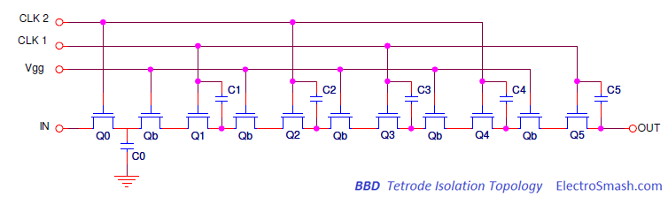
Between each of this switch transistors, there is a capacitor (charge-holding element) which is separated by a DC-biased gate transistor, which greatly improves transfer efficiency. Only half of the caps carry information, the other half remain charged2.3 The Complementary Output Topology.
The output architecture was enhanced using two source follower transistors connected to the last two consecutive capacitors, resulting in a full wave output. Mixing these two outputs a more continuous output waveform is generated, providing a means of improved suppression of clocking glitches.
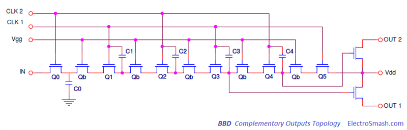
Some designs use a trim-pot to vary the load termination between the two output followers to minimize clock frequency component due to VGS between them. This could be useful if running very low clock frequencies, and tight filter skirts to passband.2.4 Dual Topology.
Another well-known topology is the Dual Delay Line which is made of two delay sections running in parallel:
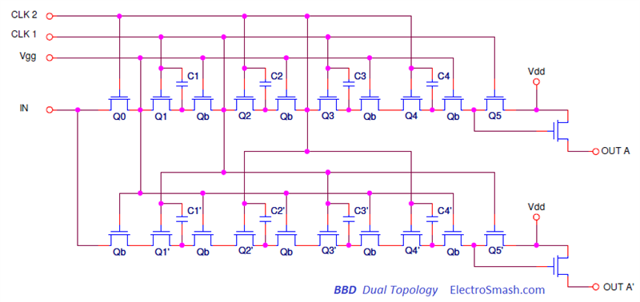
This approach offers flexible performance:
- Each section can be used independently, only sharing the power supply.
- Each section can be connected in series to get double delay time for a given sample rate.
- Each section can be multiplexed to double the sample rate.
- Each section can be operated in differential mode in order to reduce even harmonic distortion.
- Several devices can be connected in series.
For more details about these configurations check the Reticon SAD1024 datasheet.
2.5 The Tapped Output Topology.
A buffer amplifier (NMOS source follower) can be used for non-destructive sampling of the capacitors. These measure points or taps permit to have multiple outputs with a different delay, which is very interesting in order to model reverb effects, mixing the different delayed output signals properly.
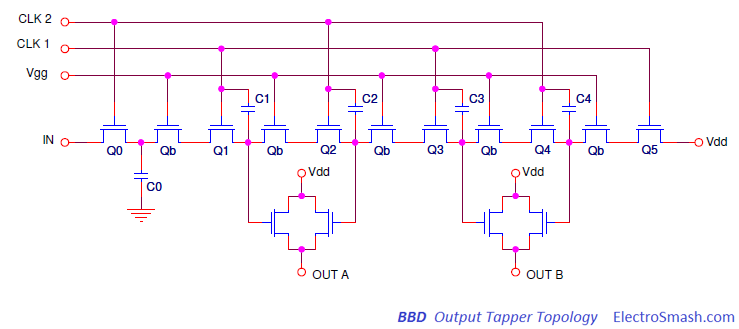
3. BBD Chips Comparison.
The most common BBD chips come from Panasonic/Matsushita MN3xxx series, with variants for high/low supply voltage and the number of stages.
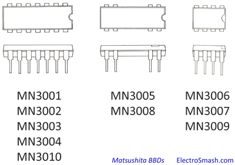
Besides Panasonic/Matsushita, other companies were licensed to make BBD clones like Behringer which bankroll Coolaudio and started producing MN3207/3208/3205 clones for their own production needs. Visual Sound recommissioned production of MN3102/MN3207 in 2009. Shangai Beilling Co LTD manufactures pin compatible parts with Panasonic/Matsushita chips, labeled with BL instead of MN.
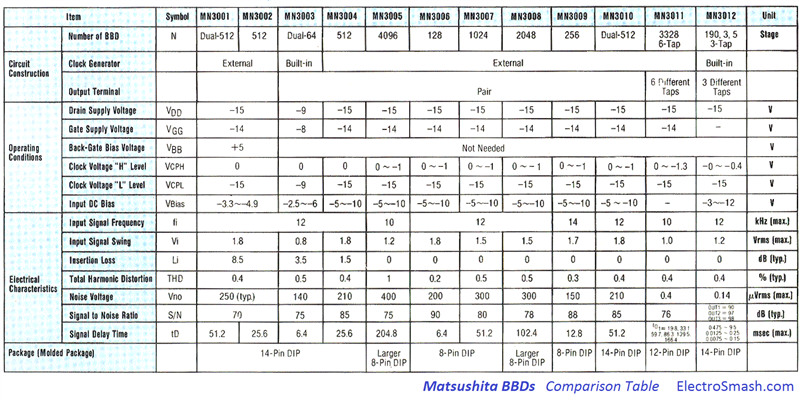
Reticon manufactured the popular BBD chips SAD512, SAD1024 and SAD4096, whose suffix represents the number of BBD stages.Less common chips include the Reticon R51xx and RD51xx series and the Philips TDA1022.
4. Bucket Brigade Devices Clock Drivers.
In order to make a BBD system fully working, a complementary clock signal generator driver is needed. Matsushita/Panasonic MN31xx series have a convenient small footprint package designed to match with their respective BBD and providing:
- A two-phase clock with low impedance and the proper capacitance. The frequency value is selected by a simple RC network.
- Stable VGG power supply used to DC bias the base of the charge-holding elements, which greatly improves transfer efficiency, VGG = 4/15 * VCC.

The usage of these devices is not mandatory, some designers in order to reduce costs, have more flexibility or achieve higher clock rates use simple voltage dividers to get VGG and oscillator parts like CD4046 (used in Zombie Chorus), CD4047 (used in Small Clone, Carbon Copy, and A/DA Flanger) or 4013 (used in Electric Mistress) to generate the double clock signal.
4.1 BBD Clock Limitations.
Following the datasheet recommendations, BBDs guaranteed a correct behavior under a certain clock frequency (100~200KHz). It is because the input capacitance of the clock pins causes progressive degradation of clock pulses above the frequency limit: The clock pulses change from square to a trapezoidal/sawtooth waveform. When that happens the switching action is not perfectly synchronized resulting in a signal degradation.
The clock frequency limitation is the reason why the Reticon SAD1024 chip was a largely preferred choice for flangers effects which involve short delay and fast clock: the input capacitance on the clock pins was much lower (110pF) than on the MN3007 (700pF), allowing it to be clocked at much higher frequencies.
When suitably buffered, though, there are reports of it clocking MN3xxx chips up well past 1MHz, which takes the device close the zero-delay zone, being convenient for fine flanger effects.
BBD Sampling Time Limitations: For any BBD, the total delay time can be calculated as:
\[time_{delay}=\frac{N}{2\cdot f_{clock}}\]
where:
N: is the number of stages.
fclock: is the circuit clock frequency.
The clock signals applied to the BBD will determine the signal sampling time, this sampling time should respect the Nyquist-Shannon Theorem:
\[f_{sampling}< 2 \cdot f_{signal}\]
- For short delay effects like flanging, the input signal can be oversampled, there is no penalty in terms of signal degradation. If the clock signal goes beyond the BBD clock boundary, the clk signal can be degraded as explained above and the audio waveform corrupted.
- For long delay effects like delay, the input signal is can be undersampled, the resulting processed signal will be degraded but the total delay time is extended.
5. Typical Circuit with BBD Architecture.
The BBDs are found in delay based effects such as echo, chorus, reverb, vibrato, flanging or delay all of them share the same general circuit architecture:
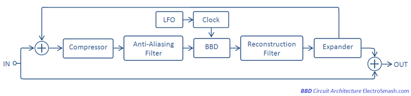
Part of the input signal is processed through the BBD chain. Depending on the clock circuit the specific effect is created: the Low-Frequency Oscillator LFO is used for flanger/chorus/vibrato effects to automatically modify the delay time. For other effects like a simple delay, it is not needed.
The output of the delay line or part of it can be feedbacked into the input with variable gain, generating trailing echoes.
Before and after the BBD action, there are some stages needed to avoid signal degradation: Dynamic Range compression/expansion, Anti-Aliasing Filter and Reconstruction Filter:
- Dynamic Range Companding (compression + expansion): These circuits allow wider dynamic range signals to be processed at the cost of altering the signal dynamics. In order to obtain low THD and good Signal to Noise ratio, the input signal has to be close to the maximum input level of the BBD.
In some cases, the compression and expansion take place outside of the anti-aliasing and reconstruction filters, while in others, the compander is implemented directly at the input and output of the BBD. Some BBD systems that require companding utilize the 570/571 series chips. This integrated circuit consists
of a pair of variable gain amplifiers and signal level averagers.
- Anti-Aliasing Filter: It is low pass filter used before a signal sampler, to restrict the bandwidth of a signal to approximately satisfy the Nyquist-Shannon sampling theorem. The sampled input signal must be bandlimited to prevent aliasing (meaning waves of higher frequency being recorded as a lower frequency).
- Reconstruction Filter: Also called Anti-Imaging Filter is again a low pass filter used to construct a smooth analog signal from a sampled input. The output signal must be bandlimited, to prevent aliasing (meaning Fourier coefficients being reconstructed as low-frequency waves, not as higher frequency aliases).
- Feedback path: The feedback path also varies from system to system; different circuits place it inside or outside of the compression and expansion circuitry.
Finally, the wet or processed signal is mixed with the dry original one, depending on this mix ratio the effect over the original signal will be more or less dramatic.
Drawbacks of Bucket Brigade Devices:
First of all, there is degradation of the capacitors charge as it passes through the bucket brigade, these losses deteriorate the quality of the delayed signal by introducing noise and distortion. The signal is slightly modified, but this is not a drawback necessarily, some players consider that this feature is unique in BBDs and contribute to create a warm or organic tone.
The process of passing the charge from bucket to bucket creates clocking noise in the signal. The output signal, therefore, looks like the audio signal, but there are “spikes” in the wave that corresponds to the clock frequency. The solution to this problem is to remove the spikes with a low pass filter, typically 30 or 36 dB per octave with a –3 dB point of around 3 kHz.
5.1 Filter Implementation.
The low pass filters used for Anti-Aliasing and Reconstruction must be strict to avoid signal distortion and keep the clock signal out of the audio path. Common configurations implement high order (2nd, 3rd, 4th) active filters using op-amps or transistors in Sallen-key configuration because of their simplicity.
In this, so called, standard strategy the cut-off frequency of the filters before and after the BBD is fixed according to the effect delay time:
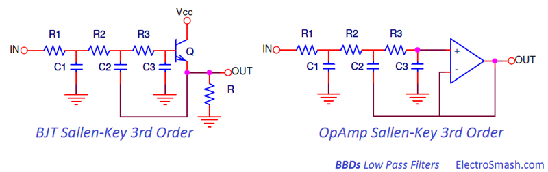
Another less common technique use switched capacitor filters, controlling the cut-off frequency by the signal clock frequency and therefore limiting the pass-band only to the necessary for a given clock frequency and improving the signal fidelity for shorter delay times.6. The MN3007.
The MN3007 core is based on the Bucket Brigade Delay circuit with an isolated triode and a differential output. It was included in popular designs like the DM-1 and CE-2 by Boss, Small Clone and Memory Man by Electro-Harmonix, AD-999 by Maxon or Analog Delay by MXR:
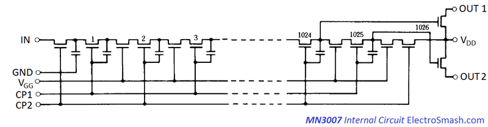
It consists of a 1024 PMOS silicon stage that provides a signal delay from 5.12 to 51.2ms. The S/N is 80dB typ, THD of 0.5% typ (VIN=0.78Vrms), supporting a clock frequency range from 10 to 100KHz. The supply voltage range is from -10 to -15V.There is some controversy among the MN3007 and MN3207 BBDs: some designers prefer to use the MN3007 because it has more headroom (higher levels/dynamic range without signal clipping) and therefore less distortion.
| MN3007 | MN3207 | |
| Technology | PMos | NMos |
| S/N Ratio | 80dB | 73dB |
| THD | 0.5% (Vin=0.78Vrms) |
0.4% (Vin=0.25Vrms) |
| Max. Freq. | 100KHz | 200KHz |
| Delay Time | 5.12 ~ 51.2ms | 2.56 ~ 51.2ms |
| Power Supply | -10 to -15V | +5 to +10V |
MN3207 is based in NMOS technology while MN3007 is PMOS (that is why it needs negative supply). Both are 1024-stage BBDs sharing the same internal circuit.
- S/N ratio is slightly better in MN3007 (80 vs 73dB).
- THD levels are similar 0.4-0.5% under different input Vrms (0.25V vs 0.78V), MN3007 accept input signals 3 times wider, having, in fact, better dynamic range and less noise.
- Maximum Clock frequency is better in MN3207 200 vs 100KHz, allowing shorter delays 2.56 vs 5.12ms.
- Regarding the power supply, the 3007 is made for high voltage (10 to 15V) and in a usual 9V pedals supply is below the ideal voltage and then ends up not with the performance which it was designed to work. The 3207 operates from 4 to 10V, being suitable for 9V powered effects and within the optimal supply range and also the 9V can be easily regulated to 5V giving a reliable standard behavior under all conditions.
Summarizing, using MN3007 will provide light advantages in terms of THD, and more dynamic headroom. In a guitar pedal, the chip will work at 9V, below the optimum supply range. So far seems that the performance in this conditions is good and preferred over the MN3207.
However, in BBD circuit design there are many other other factors that can improve the performance more than the chip itself:
- The use of compander circuitry to keep a ceiling on input signal levels.
- The bias voltage fine adjustment.
- The filtering applied, and the support circuitry (quality of clock pulse, mixing of complementary outputs, etc.)
7. Resources:
Official Panasonic Bucket Brigade Devices Databook by Harry Bissell.
Practical Modeling of Bucket Brigade Device Circuits by Raffael & Smith.
Anti-Aliasing Filters Application Note by Microchip.
PAiA Phlanger in Hammer AmpPage.
Bucket Brigade Delay Line Application Note
Bucket-brigade electronics - new possibilities for delay, time-axis conversion, and scanning by F. L. J. Sangster and K. Teer. (IEEE Journal vol. 4, no. 3, pp. 131–136, 1969.)
Bucket Brigade Devices Circa 1977. - Bucket Brigade Devices Circa 1976.
The PT-80 Digital Delay by General Guitar Gadgets.
www.CircularScience.com by John Roberts.
7.1 Datasheets:
All MN3XXX, SAD512-1024-4096 and TDA1022 Datasheets by ExperimentalistAnonymous.
All MN3XXX, SAD512-1024-4096 and TDA1022 Datasheets by Mark Hammer.
Thanks for reading, all feedback is appreciated